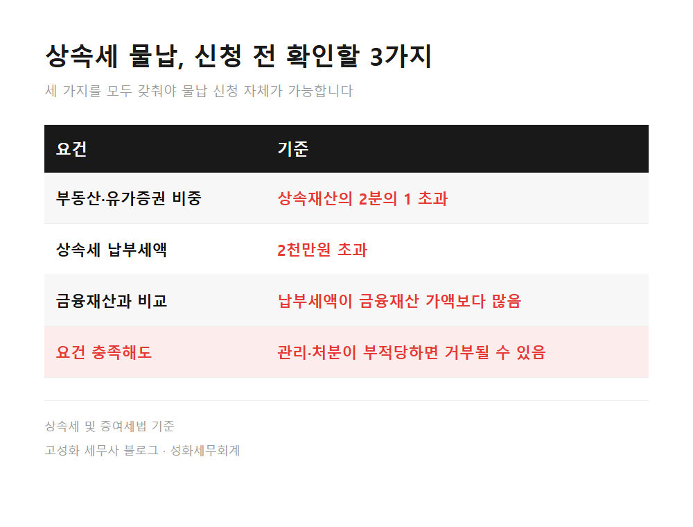
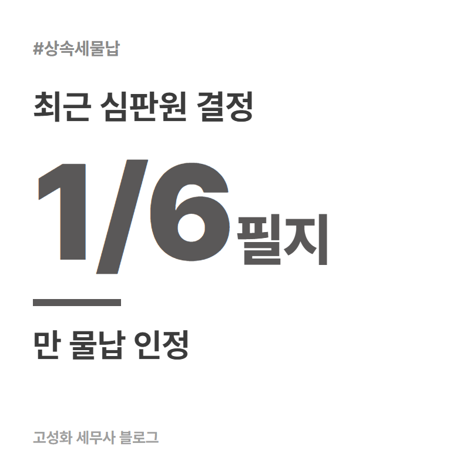
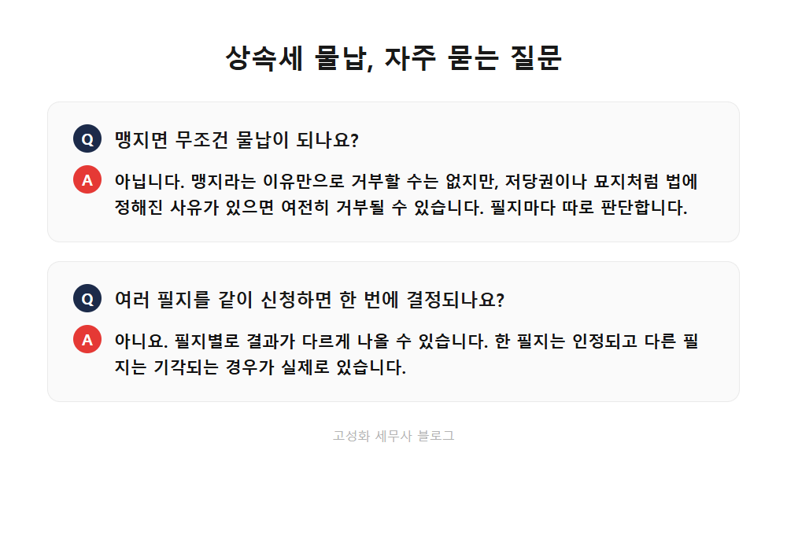

상속세 물납 맹지, 무조건 거부되진 않습니다 1편

상속세 신고 상담을 하다 보면, 통장 잔고보다 등기부등본이 먼저 나오는 경우가 있습니다. 부모님이 남기신 게 아파트 한 채뿐이면 그나마 수월한데, 시골 땅이나 오래된 임야까지 섞여 있으면 상속세를 어떻게 낼지부터 막막해집니다.
세금은 정해졌는데 그걸 낼 현금이 없는 상황, 상속을 받아보신 분이라면 한 번쯤 마주치셨을 겁니다.
이 글을 보고 계신 분은 아마 ①부모님께 토지나 임야를 상속받았고 ②그 땅이 도로에 붙어 있지 않거나 오래 방치돼 있고 ③상속세를 현금으로 낼 여력은 부족한 경우일 겁니다. 세금을 땅으로 대신 내는 물납이라는 제도가 있고, 맹지라는 이유만으로 무조건 거부되지는 않습니다. 다만 조건이 꽤 까다롭습니다.
- 물납, 세 가지 요건부터 채워야 합니다
- 법에 정해진 거부 사유엔 사실 맹지가 없습니다
한눈에 보기



자주 묻는 질문
맹지면 무조건 물납이 되나요?
아닙니다. 맹지라는 이유만으로 거부할 수는 없지만, 저당권이 설정돼 있거나 건물 소유자가 다르거나 묘지가 있는 것처럼 법에 정해진 사유가 있으면 여전히 거부될 수 있습니다. 필지마다 따로 판단합니다.
여러 필지를 같이 신청하면 한 번에 결과가 나오나요?
아닙니다. 위 심판원 결정처럼 필지별로 결과가 다르게 나올 수 있습니다. 한 필지는 인정되고 다른 필지는 기각되는 일이 실제로 있습니다.
물납이 안 되면 다른 방법은 없나요?
세금을 여러 해에 나눠 내는 연부연납이라는 방법이 있습니다. 이번 사례에서도 주택을 담보로 한 연부연납은 승인됐습니다. 요건과 이자는 다음 글에서 정리하겠습니다.
정리하면
상속세 물납은 부동산·유가증권 비중, 납부세액 2천만원 초과, 금융재산 부족이라는 세 가지 요건을 먼저 채워야 신청할 수 있습니다. 맹지라는 이유만으로 거부되지는 않지만, 저당권이나 묘지 같은 법정 사유가 있으면 여전히 막힐 수 있고, 여러 필지를 신청하면 필지마다 결과가 다르게 나올 수 있습니다.
상속세 신고를 이미 마치셨더라도, 지났다고 생각하셨던 물납이나 연부연납으로 바꿀 수 있는지는 따로 확인해 볼 수 있는 경우가 많습니다.
다음 글에서는 물납이 어려울 때 선택할 수 있는 연부연납, 최대 10년까지 나눠 내는 방법과 이자를 정리하겠습니다.
내 땅이 물납 요건에 맞는지, 등기부와 지적도를 같이 보고 확인해드립니다. 편하게 문의 주세요.
본문 전체와 근거 조문은 블로그에서 확인하실 수 있습니다.